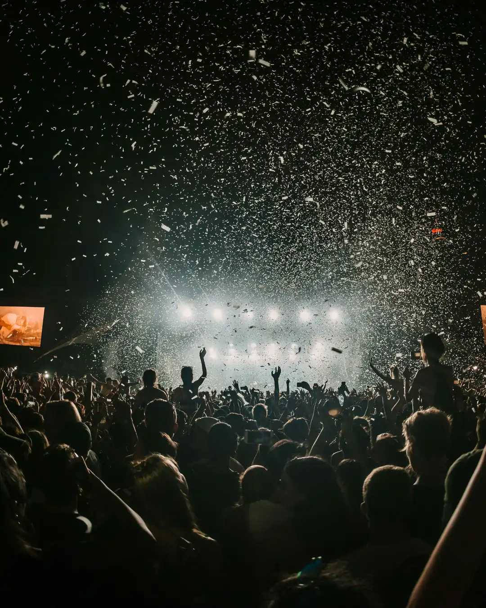
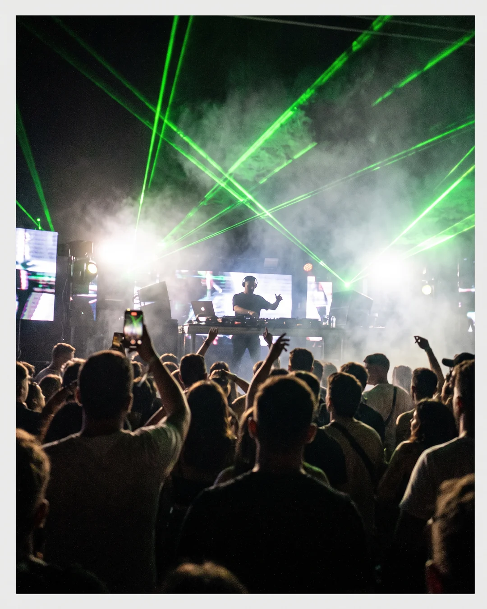
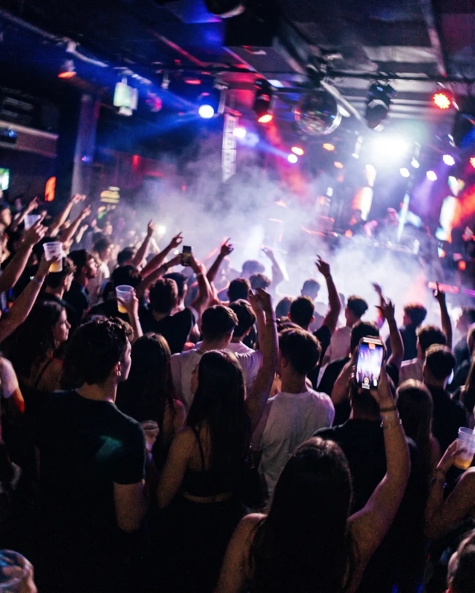

Caso n.º 6 · Discoteca
Imágenes
-

REAL
Fotografía real
-
IA
La confesión del sospechoso
La barra de una discoteca con gente pidiendo, el camarero de espaldas y luces de neón reflejadas en las botellas; desenfocada.
-
REAL
Fotografía real
-

IA
La confesión del sospechoso
El DJ en la cabina visto desde la pista, entre cabezas de gente, con láseres verdes atravesando el humo.
-

IA
La confesión del sospechoso
Pista de baile de una discoteca abarrotada vista desde dentro, con luces de colores, humo y gente con los brazos en alto; foto muy movida y con grano.
¿Dato o Bulo?
-
DATO «La discoteca que Guinness reconoció como la más grande del mundo estaba en Ibiza.»
Era Privilege, en Sant Rafel (Ibiza, España), con capacidad para unas 10.000 personas.
-
DATO «El DJ profesional más joven del mundo tenía menos de 5 años.»
El récord Guinness de DJ de club más joven es del británico Archie Norbury, «DJ Archie».
- Pinchó con 4 años y 130 días.
-
BULO «La primera vez que un DJ actuó en unos Juegos Olímpicos fue en Pekín 2008.»
Fue en Atenas 2004, cuando el DJ neerlandés Tiësto pinchó durante el desfile de atletas de la ceremonia de apertura.
-
DATO «El concierto de Rod Stewart en la playa de Copacabana es el mayor concierto gratuito de la historia.»
Fue en la Nochevieja de 1994, en Río de Janeiro (Brasil).
- Guinness lo reconoce como el mayor concierto gratuito.
- Asistieron unos 3,5 millones de personas.
-
BULO «La bola de discoteca se inventó para las discotecas de los años 70.»
Las bolas de espejos ya se mencionaban a finales del siglo XIX, décadas antes de la música disco.